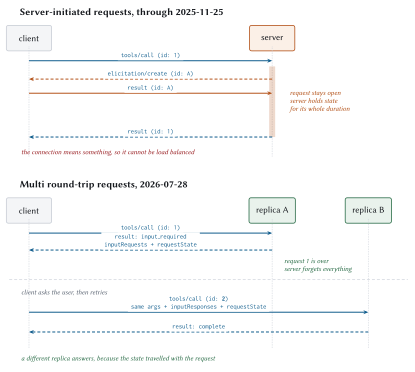
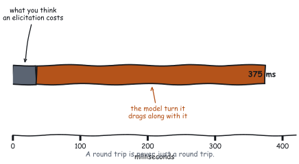

Multi Round-Trip Requests
The Captain says it right before demonstrating that he has no interest in communicating at all. Which is roughly what a 2025-era MCP server did when it needed something from you: it stopped, held the connection hostage, and sent its own request back down the pipe.
That mechanism is gone. What replaced it is one of the cleanest pieces of design in the whole revision, and it costs more than people expect. Both halves of that sentence matter, so this chapter does the mechanism first and the price second.
The problem
A server is halfway through a tool call and needs something only the client can supply. A username. An approval. A confirmation from a human who has authority the server does not.
The old answer was control-flow inversion. The server sent a JSON-RPC request back to the client, mid-call, on the same connection, and blocked until the answer arrived.

That worked, and it had a fatal property for 2026: the connection meant something. The server held state for the life of the request. Which meant no load balancing without stickiness, no serverless, and no surviving a dropped connection.
Statelessness and server-initiated requests cannot coexist. One of them had to go.
The MRTR pattern
Four steps, and the third one is the clever bit.
Client sends a request.
Server realises it needs more, and answers. Not with the result, with
resultType: "input_required", carrying the questions and an opaquerequestState. The original request is now complete and forgotten.Client gathers what was asked for, then re-sends the original request, with a new id, carrying
inputResponsesand echoingrequestStateunchanged.Server has enough, and returns the real result.
The server holds nothing between steps 2 and 3. Whatever it needs to remember, it seals into requestState and hands to the client to carry back.
On the wire
The interim result:
{
"jsonrpc": "2.0",
"id": 1,
"result": {
"resultType": "input_required",
"inputRequests": {
"approval": {
"method": "elicitation/create",
"params": {
"mode": "form",
"message": "Exposure of $9,000,000 on ACC-1042 exceeds the
$5,000,000 threshold. Who is approving?",
"requestedSchema": {
"type": "object",
"properties": {
"approver": { "type": "string", "title": "Approver",
"minLength": 2 },
"rationale": { "type": "string", "title": "Rationale",
"maxLength": 400 }
},
"required": ["approver"]
}
}
}
},
"requestState": "v1.eyJkIjp7ImFjY291bnRJZCI6...?=.mXK9Fz..."
}
}And the retry:
{
"jsonrpc": "2.0",
"id": 2,
"method": "tools/call",
"params": {
"name": "assess_account_risk",
"arguments": { "accountId": "ACC-1042", "exposureUsd": 9000000 },
"inputResponses": {
"approval": {
"action": "accept",
"content": { "approver": "j.okonjo", "rationale": "board approved" }
}
},
"requestState": "v1.eyJkIjp7ImFjY291bnRJZCI6...?=.mXK9Fz..."
}
}Three things to notice, all of them enforced:
The id changed. 1 to 2. These are independent requests, not a continuation, and the specification requires the ids to differ. Meridian tests it:
def test_retry_uses_a_different_id(self):
"""The retry is an independent request, so it must not reuse the id."""
...
result = client.call_tool("ask", {})
self.assertEqual(result["content"][0]["text"], "hello ada")
self.assertEqual(len(ids), 2)
self.assertNotEqual(ids[0], ids[1])The arguments are repeated in full. The server does not remember them.
requestState is echoed byte for byte. The client must not inspect it, parse it, or modify it. If there was no requestState, the client must not invent one.
The three requests a server may make
inputRequests is a map from server-chosen keys to request objects, and exactly three kinds are permitted:
| Method | Asks for | Status |
elicitation/create |
Input from the user | Active |
sampling/createMessage |
A completion from the model | Deprecated |
roots/list |
The client’s directory roots | Deprecated |
A map rather than a list, because a server can ask several things at once and the keys correlate answers to questions. Asking for everything in one interim result costs one round trip; asking one at a time costs one each.
And a hard rule: never send a request the client did not declare support for. Meridian checks and degrades:
def _ask_for_approval(self, ctx, account_id, exposure):
if not ctx.capabilities.supports_elicitation("form"):
# Never send a request shape the client did not declare. Degrade
# to a plain error the model can relay to the user instead.
return tool_error(
f"Exposure of ${exposure:,.0f} exceeds the "
f"${APPROVAL_THRESHOLD_USD:,.0f} threshold and this client "
"cannot collect an approval.")
return input_required(...)Note what that does. It does not fail silently, and it does not send a shape the client will choke on. It returns a tool execution error explaining exactly why the operation cannot proceed, which the model can relay to the user, who can go and use a client that supports elicitation.
requestState is attacker-controlled
Here is the part that deserves your full attention.
requestState leaves your server, passes through a client you do not control, and comes back. It may come back modified. It may come back from a different user. It may come back attached to a different tool call. It may come back next week.
The specification’s requirement: if requestState influences authorization, resource access, or business logic, servers must protect its integrity and must reject state that fails verification. Integrity protection may be omitted only when tampering can cause nothing worse than the request failing.
Meridian’s implementation closes all three, plus a window:
class StateSealer:
"""Authenticated, expiring, principal-bound `requestState`.
The format is `v1.<payload-b64>.<mac-b64>`, with the MAC over the payload
bytes. HMAC-SHA256 gives integrity, which is what the specification
requires. It does not give confidentiality: anyone holding the blob can
read it. So put correlation data in here, never secrets.
"""
def seal(self, data, *, principal=None, method=None, params=None,
ttl_seconds=None, now=None) -> str:
now = time.time() if now is None else now
envelope = {
"d": data,
"exp": now + (ttl_seconds if ttl_seconds is not None
else self.ttl_seconds),
"sub": principal,
"req": self.request_digest(method, params or {}) if method else None,
}
payload = json.dumps(envelope, sort_keys=True,
separators=(",", ":")).encode()
return (f"{self.VERSION}.{self._b64e(payload)}"
f".{self._b64e(self._mac(payload))}")What a MAC is, and why the comparison is the interesting part
A message authentication code is a short tag computed from a message and a secret key. Anyone holding the key can compute the tag and check it; anyone without the key cannot produce a valid one for a message they invented. So the tag proves two things at once: that the message was written by a holder of the key, and that nobody has changed a byte since.
It is not encryption. The payload here is base64, which is an encoding anybody can reverse in one line. Whoever holds the token can read what is inside it, which is exactly why the docstring says to put correlation data in there and never secrets.
The obvious construction, hash the key concatenated with the message, is broken against certain hash functions by length-extension attacks: an attacker who has one valid tag can compute a valid tag for a longer message without knowing the key. HMAC exists to close that. It hashes twice, with two derived keys, and the construction is old, boring, and available in every standard library. Use it rather than inventing something.
The subtle part is the comparison, and Meridian uses hmac.compare_digest where == would look fine:
if not hmac.compare_digest(mac, self._mac(payload)):
raise StateTampered()An ordinary string comparison returns as soon as it finds a byte that differs. That makes its running time depend on how many leading bytes matched, and that dependency is information. An attacker who can send many candidate tokens and time the responses can learn the first byte of the correct tag, then the second, because a guess with one more correct byte comes back measurably later. That turns forging a 32-byte tag from 2256 guesses into roughly 32 × 256 of them, which is a few thousand requests.
A constant-time comparison looks at every byte regardless and returns a single answer at the end, so the timing carries nothing. The difference between the two functions is invisible in every test you will write and is the entire security of the check.
Four bindings, each closing one door
- The MAC
-
stops tampering, and stops it whether the client edited the payload deliberately or a proxy mangled it by accident.
sub, the principal-
stops cross-user replay.
req, a request digest-
stops cross-request replay. Note carefully what it covers: the method, the name, and the arguments, but not
inputResponses, because those change between the mint and the redeem. exp-
bounds the window when the other three are not enough.
if not hmac.compare_digest(mac, self._mac(payload)):
raise StateTampered()
if envelope.get("exp", 0) < now:
raise StateExpired()
bound_sub = envelope.get("sub")
if bound_sub is not None and bound_sub != principal:
raise StateTampered("requestState was issued to a different principal")
bound_req = envelope.get("req")
if bound_req is not None:
if not hmac.compare_digest(bound_req,
self.request_digest(method, params or {})):
raise StateTampered("requestState was issued for a different request")Each binding gets its own test, because a security control that is not tested is a security control that will be refactored away:
def test_principal_binding_blocks_cross_user_replay(self):
token = self.sealer.seal({"txn": "T1"}, principal="alice")
self.assertEqual(self.sealer.open(token, principal="alice"), {"txn": "T1"})
with self.assertRaises(McpError):
self.sealer.open(token, principal="bob")
def test_request_binding_blocks_cross_request_replay(self):
params = {"name": "approve_refund", "arguments": {"amount": 10}}
token = self.sealer.seal({"ok": True}, method="tools/call", params=params)
other = {"name": "transfer_funds", "arguments": {"amount": 10}}
with self.assertRaises(McpError):
self.sealer.open(token, method="tools/call", params=other)And an end-to-end test that checks both directions, because a check that rejects everything is not a check:
first = post({"name": "assess_account_risk", "arguments": args}, 1)["result"]
forged = first["requestState"][:-4] + "AAAA"
second = post({..., "requestState": forged}, 2)
self.assertIn("error", second, "a forged requestState was accepted")
# And the untampered state still works, so the check is not just
# rejecting everything.
third = post({..., "requestState": first["requestState"]}, 3)
self.assertIn("structuredContent", third["result"])Two more rules that fall out of the format. Sign with a secret shared across your fleet, not a per-process one, or a retry that lands on another replica cannot open state its sibling sealed. And put no secrets inside: HMAC gives integrity, not confidentiality, and anyone holding the blob can read it.
Elicitation
The one input request you should actually build on. Two modes, and the choice between them is a security decision.
Form mode
Structured data, collected through the client, validated against a schema. The schema is restricted to flat objects of primitives, deliberately, so that any client can render a form without implementing a JSON Schema editor.
Strings, numbers, integers, booleans, and enums (single and multi-select, with or without display titles). No nested objects. No arrays of objects.
"approval": elicit_form(
f"Exposure of ${exposure:,.0f} on {account_id} exceeds the "
f"${APPROVAL_THRESHOLD_USD:,.0f} threshold. Who is approving?",
{
"type": "object",
"properties": {
"approver": {
"type": "string",
"title": "Approver",
"description": "Name or employee id of the approver",
"minLength": 2,
},
"rationale": {"type": "string", "title": "Rationale",
"maxLength": 400},
},
"required": ["approver"],
},
)The three response actions
| Action | Means | Server should |
accept |
Submitted, with data | Process it |
decline |
Explicitly refused | Offer an alternative, or fail clearly |
cancel |
Dismissed without choosing | Consider asking again later |
if answer.declined:
return tool_error(
f"Exposure of ${exposure:,.0f} was declined by the approver.")
if answer.cancelled:
return tool_error("Approval dialog was dismissed. Nothing was scored.")And one case that is neither: the user accepted but left a required field blank. The specification’s guidance is to ask again, not to error:
approver = (answer.content or {}).get("approver", "").strip()
if not approver:
# Missing a value we need is not an error. Ask again.
return _ask_for_approval(ctx, account_id, exposure)URL mode
For anything that must not touch the client. The server returns a URL, the client shows it, gets consent, and opens it somewhere it cannot read.
{
"method": "elicitation/create",
"params": {
"mode": "url",
"url": "https://mcp.meridian.example/ui/connect-bank",
"message": "Connect your bank account to continue."
}
}The response says only {"action": "accept"}, and that means “the user agreed to look”, not “the interaction succeeded”. The client never learns the outcome. The server finds out by other means and reports on the retry.
The client-side rules are strict, and they exist because a server-supplied URL rendered in a trusted UI is a phishing vector:
Must not pre-fetch the URL or its metadata.
Must not open it without explicit consent.
Must show the full URL before consent.
Must open it where neither the client nor the model can inspect the contents. On iOS that means
SFSafariViewController, notWKWebView.Should highlight the domain, and warn on Punycode.
That last one needs unpacking, because it is the rule most likely to be skipped by somebody who does not know what it refers to. Domain names are ASCII on the wire, so internationalised domains are encoded into ASCII by a scheme called Punycode and marked with an xn-- prefix. münchen.example travels as xn--mnchen-3ya.example.
The attack is that many Unicode characters are visually identical to ASCII ones. Cyrillic small A, U+0430, renders identically to Latin a in nearly every font, and Greek omicron is indistinguishable from Latin o. So an attacker registers a domain that displays as meridian.example in your UI, character for character, with one of those substitutions inside it, and it is a different domain entirely. A user checking the URL carefully, doing exactly what you asked of them, sees the right thing.
The mitigation is to show the encoded form when a domain contains mixed scripts, so the user sees xn--meridin-... and knows something is off. Most browsers do this already. A client rendering a server-supplied URL in its own trusted chrome has taken on the browser’s job here.
The cost
Now the number, which is the reason this chapter exists in a performance book.

Plus the human, who is not in that table and who takes seconds.
Four ways to not need it
Put it in the schema. The best elicitation is the one that never happens. If a tool always needs an approver for large exposures, make approver an optional argument and let the model supply it when the user already said it. Zero round trips when it works.
Ask for everything at once. inputRequests is a map. Three questions in one interim result cost one round trip; three separate interim results cost three.
Ask early. An elicitation on step one of a five-step task costs one model turn. On step four, it costs a model turn plus the risk that the user has wandered off and the context has gone stale.
Consider whether you need to ask at all. Chapter 5 put it as a question: should the tool schema have captured this? Often yes. The elicitation is sometimes a symptom of a tool that was designed around an existing API rather than around the task.
| Ask the... | When |
| User, via elicitation | Only a human can supply it: authority, preference, consent, a credential |
| Model, via a better schema | It is derivable from the conversation the model is already holding |
| Nobody | The tool should have taken it as a parameter, and you are papering over a design gap |
Why Sampling and Roots lost
A design post-mortem, because the reasoning generalises.
Sampling
The idea: a server asks the client to run a completion on its behalf. The server gets model access without an API key, the user’s provider and quota are used, and the host keeps control over what the model sees.
Genuinely elegant. It lost anyway, for three reasons.
The control-flow inversion was the whole problem. Sampling was the main justification for server-initiated requests, and server-initiated requests are what statelessness could not accommodate.
Direct provider integration won on the ground. It is 2026. A server that wants a model call adds three lines and an API key. The indirection bought less than it cost.
Quality control is impossible through the indirection. The server cannot choose the model, cannot see the system prompt, and cannot verify what actually ran. modelPreferences was a hint, and hints are not a contract.
Roots
The idea: the client tells the server which directories it may work in.
It lost for a simpler reason. It was a capability that looked like a security boundary and was not one. A server that respects roots is a server that was going to behave anyway; a malicious one ignores the list. Meanwhile it added a client-side concept, a notification, and a round trip.
The generalisable lesson: a protocol feature that depends on the other party’s goodwill is documentation, not enforcement. Roots described an intention. The host’s consent gate enforces one.
Meridian’s approval flow, end to end
Two round trips, and Meridian asserts exactly that:
def test_approval_flow_completes_in_two_round_trips(self):
host = wire_host(inputs={
"approval": {"action": "accept",
"content": {"approver": "j.okonjo",
"rationale": "board ok"}},
})
binding = host.bindings["risk"]
before = binding.client.stats.requests
result = host.call_tool("risk.assess_account_risk",
{"accountId": "ACC-1000", "exposureUsd": 9_000_000})
self.assertFalse(result.get("isError"))
self.assertIn("score", result["structuredContent"])
self.assertEqual(binding.client.stats.requests - before, 2)
self.assertEqual(binding.client.stats.mrtr_rounds, 1)And crucially, the sub-threshold path costs one:
def test_below_threshold_needs_no_round_trip(self):
...
host.call_tool("risk.assess_account_risk",
{"accountId": "ACC-1000", "exposureUsd": 100_000})
self.assertEqual(binding.client.stats.requests - before, 1)That second test is the one that matters operationally. The expensive path should be reachable only when it is genuinely needed, and a test is the only thing that stops a refactor from making it unconditional.
The client-side loop is bounded, because a server can legitimately ask again and a buggy one can ask forever:
for round_no in range(MAX_MRTR_ROUNDS):
...
if result.get("resultType") != jsonrpc.RESULT_INPUT_REQUIRED:
return result
self.stats.mrtr_rounds += 1
requests = result.get("inputRequests") or {}
pending_state = result.get("requestState")
pending_responses = self._answer(requests) if requests else {}
if requests and not pending_responses:
# Nothing could be answered. Retrying would loop forever.
raise errors.InvalidParams(
"server requested input this client cannot provide")
raise errors.InternalError(
f"{method} still asking for input after {MAX_MRTR_ROUNDS} rounds")What to remember
Servers answer with
input_requiredinstead of asking mid-call. The original request finishes.The retry uses a new id, repeats the arguments, and echoes
requestStateunmodified.requestStateis attacker-controlled. Seal it with a MAC, bind it to the principal and the request, and expire it. None of that makes it single-use.Sign with a fleet-wide secret, and put no secrets inside.
Never send an input request the client did not declare support for. Degrade with a clear tool error.
Form mode for ordinary input, URL mode for anything sensitive. Verify that the user who opens a URL is the user it was minted for.
declineandcancelare different. A blank required field means ask again, not error.One elicitation costs about 375 ms, of which only 35 is transport. Ask for everything at once, ask early, or design so you need not ask.
Sampling and Roots are deprecated. Both depended on the other party’s goodwill or on a stateful connection.
Next: extensions, and the Tasks extension, which is what you use when the work takes longer than anyone wants to hold a connection open for.